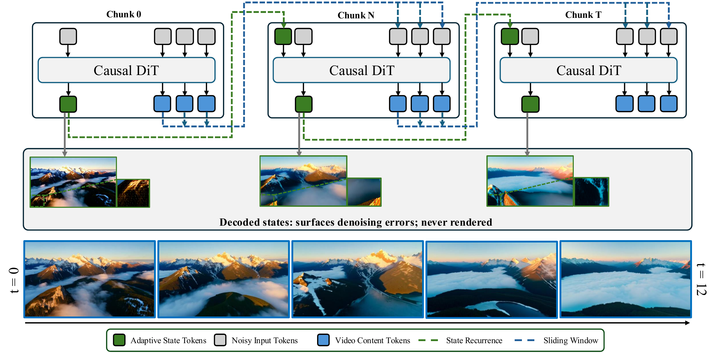
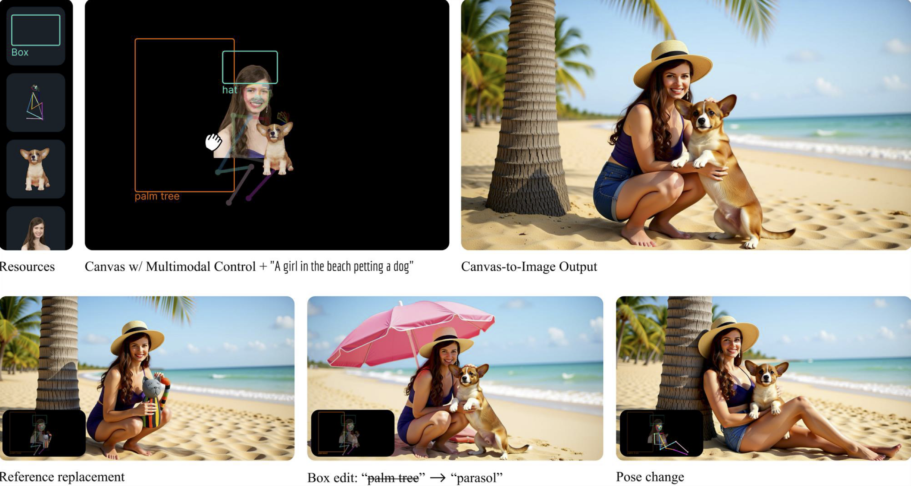
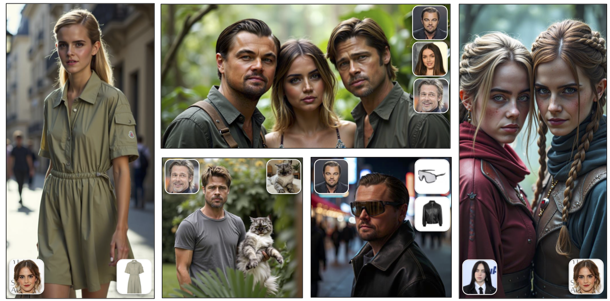
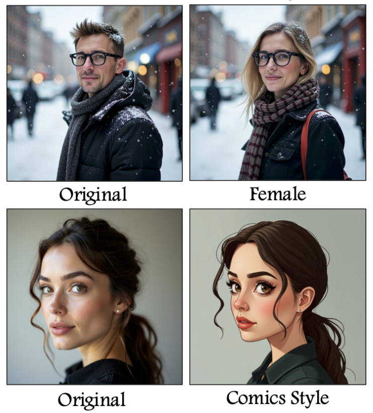
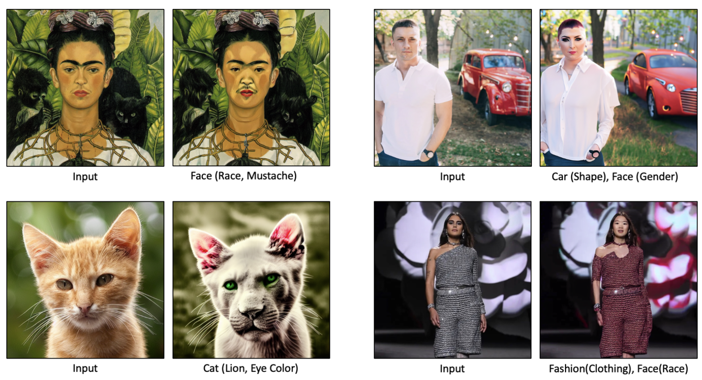

About
I am a Ph.D. candidate (4th year) at Virginia Tech, Blacksburg, where I am affiliated with the Sanghani Center for Artificial Intelligence and Data Analytics. I work on making generative models more controllable and customizable to enhance fine-grained control over them. Before joining Virginia Tech, I obtained my M.Sc. & B.Sc. degrees from the Department of Computer Engineering at Bilkent University (M.Sc. Thesis).
At Virginia Tech, I am working on the controllability of generative models under the supervision of Pinar Yanardag. In the past, I have been fortunate to work with Aysegul Dundar at Bilkent University, Yijun Li at Adobe Research, Kfir Aberman and Kuan-Chieh Jackson Wang at Snap Research, and I am currently a Research Intern at Google Research with Mauricio Delbracio.
Selected Publications


Canvas-to-Image: Compositional Image Generation with Multimodal Controls
SIGGRAPH 2026

LoRAShop: Training-Free Multi-Concept Image Generation and Editing with Rectified Flow Transformers
NeurIPS 2025 Spotlight · Top 3%

FluxSpace: Disentangled Semantic Editing in Rectified Flow Transformers
CVPR 2025

NoiseCLR: A Contrastive Learning Approach for Unsupervised Discovery of Interpretable Directions in Diffusion Models
CVPR 2024 Oral · Top 0.8%
For the full list of publications, visit the Publications page and my Google Scholar profile.
Industry Experience

Working on efficient image tokenization for generative models — compact latent representations that reduce token counts while preserving reconstruction fidelity and downstream generation quality.

Developed a multi-subject diffusion framework enabling spatially controllable composition from canvas inputs, incorporating vision-language representations for enhanced semantic understanding. Resulted in Canvas-to-Image (SIGGRAPH 2026).
Developed an inference-time harmonization approach for layered image generators, introducing attention-level blending for layered compositions that interact across layers. Resulted in LayerFusion (CVPR Findings 2026).
News & Updates
AdaState now available on arXiv.
Recognized as a Gold Reviewer at ICML 2026.
Recognized as an Outstanding Reviewer at CVPR 2026.
Joined Google Research as a Research Intern, working on efficient image tokenization for generative models.
Canvas-to-Image got accepted to SIGGRAPH 2026.
LayerFusion got accepted to CVPR 2026 Findings.
LoRAShop got accepted to NeurIPS 2025 as a Spotlight (top 3%).
Joined Snap Research as a Research Intern, working on multi-subject diffusion frameworks.
Awarded the Amazon Fellowship as part of the Amazon – Virginia Tech Initiative in Efficient and Robust Machine Learning.
FluxSpace got accepted to CVPR 2025.
FluxSpace and Context Canvas now available on arXiv.
Joined Adobe Research as a Research Scientist Intern.
NoiseCLR got accepted to CVPR 2024 for an Oral presentation (top 0.8%).
My M.Sc. thesis won the Best Master Thesis Award from IEEE CS Turkey Chapter.
Started my Ph.D. at Virginia Tech.
Scroll for more